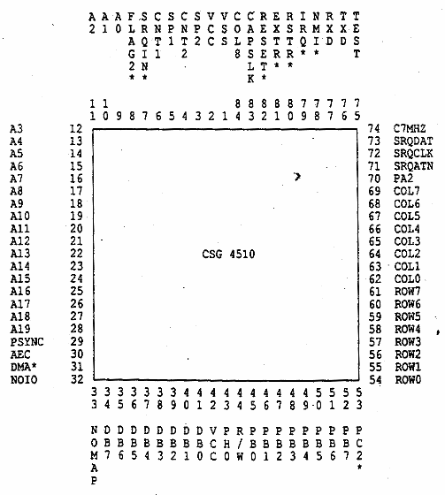

| System Specification for C65 | Fred Bowen | March 1, 1991 |
This specification describes the requirements for a single chip 8-bit microcontroller unit fabricated in 2U CMOS double-metal technology for high speed and low power consumption.
The IC is a fully static device that contains an enhanced 6502 microprocessor (65CE02), four independent 16-bit interval timers, two 24-hour (AM/PM) time of day clocks each with programmable alarm, full-duplex serial I/O (UART) channel with programmable baud rate generator, built-in memory map function to access up to 1 megabyte of memory, 2 8-bit shift registers for synchronous serial I/O, and 30 individually programmable I/O lines.
This IC device shall be configured in a standard, 84-pin plastic chip carrier package. [*** Pinout below will change for 451OR5 ****]

| This page has been created by Sami Rautiainen. | |
| Read the small print. | Last updated May 09, 2002. |